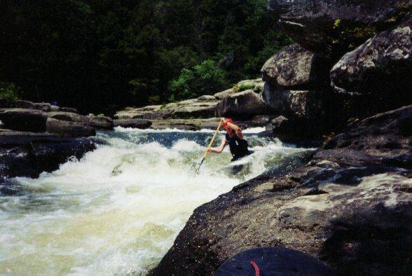

Bear (West) Creek
| Outside of the big ones, this is about as good as it gets on Bear. Who is this
lovely young lady and why is she not wearing a helmet? (Mary D' , Ben Ferrill in the background) |
| Boyd Ruppelt runnin’ the Left falls of the middle slot of Old Mill Falls (photo courtesy Boyd Ruppelt) |
|
| Boyd runnin’ the main route on Old Mill Falls…the middle-to-left line of the river
left slot. (photo courtesy Boyd Ruppelt) |
|
| A trandom run of Old Mill Falls. Boyd runnin’ the Middle slot (left), Jeremy
Moya runnin’ the right-to-middle route and Keith Lockey runnin’ the left route (right…almost outa the picture) (photo courtesy Boyd Ruppelt) |
|
| Boyd goin’ for the right side boof on the middle line on Old Mill Falls (photo courtesy Boyd Ruppelt) |
| Mary D' negotiates the slide just above Factory Falls. Lots going on here. We got the Bubba belly on the cooler in the background. Try not to run over the waders when you run this rapid. | |
| Boyd on the surfing wave at the top of this slide (photo courtesy Boyd Ruppelt) |
|
| Boyd just below the undercut decapitation rock at Factory Falls, shortly after seal
launching downstream of the main drop. (photo courtesy Boyd Ruppelt) |
|
|  | The lower part of the class III rapid below Factory Falls |